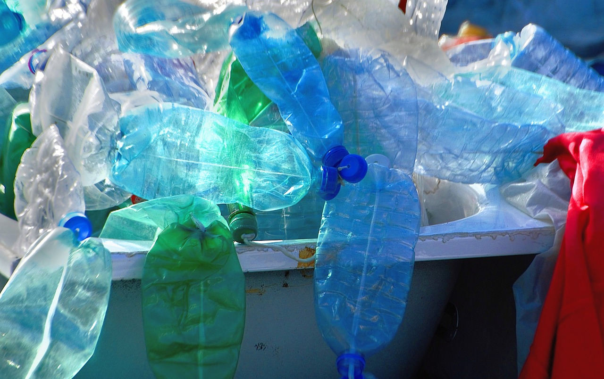

.png)


FORMAS DE TRATAMENTO
ATERROS SANITÁRIOS
Os aterros sanitários são a alternativa adequada em substituição aos lixões. Neles, a terra é impermeabilizada para impedir que o chorume e a água da chuva contaminem o solo e o lençol Além disso, diferentemente dos lixões, onde os resíduos são descartados sem nenhum tratamento, nos aterros sanitários o lixo é compactado e coberto com uma camada de solo.

INCINERAÇÃO
As usinas de incineração de lixo têm a vantagem de demandar uma pequena área para instalação e de reduzir o volume de lixo descartado. A fim de serem vantajosas para o meio ambiente, essas usinas possuem tecnologia para filtrar a fumaça produzida pela incineração. Dessa forma, é possível evitar a liberação de gás carbônico — que é responsável pelo aquecimento global
RECICLAGEM
A reciclagem é uma das formas mais adequadas para o tratamento de lixo. Ela permite reduzir o volume de lixo gerado ao mesmo tempo em que evita o gasto de energia e de recursos naturais para a produção de novos materiais. Como os materiais possuem um período de decomposição muito longo, ela torna-se crucial para impedir o impacto do acúmulo desses produtos na natureza.
COMPOSTAGEM
Já a compostagem é uma maneira de aproveitar os resíduos orgânicos descartados diariamente. Por meio da compostagem, o lixo orgânico é transformado em um material estável e rico em nutrientes que pode ser utilizado na agricultura em substituição aos adubos químicos, por exemplo, os quais são nocivos ao meio ambiente.
Teste seu conhecimento com um breve minigame: